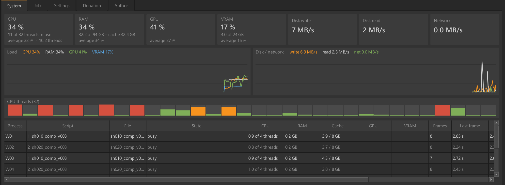

Szybki lokalny render dla Nuke. Render dzieli się na kawałki (chunki), które liczy jednocześnie kilka procesów Nuke. Po renderze JKrender sprawdza każdą klatkę na dysku.
Spis treści
1Jak działa JKrender
2Instalacja i uruchomienie z Nuke
3Mapa okna
4Karty renderów i wiersz sterowania
5Kafelki i mapa klatek
6Panel Output: podgląd i klatki
7Panele Chunks i Details
8Panele Workers i Log
9Panel System
10Zakładki Job i Settings
11Jak ustawić render
12Test this script
13Pilnowanie RAM i VRAM
14Kontrole, dźwięki, awarie, dane
15Mysz i klawisze: ściąga
16Gdy coś nie działa
1 Jak działa JKrender
Zwykły render w Nuke działa w jednym procesie, który klatka po klatce liczy cały skrypt. Jeden Nuke rzadko jednak wykorzystuje wszystkie 32 wątki procesora. Dlatego JKrender uruchamia kilka procesów Nuke obok siebie. Każdy otwiera skrypt tylko raz, a potem dostaje kawałki pracy, tak zwane chunki: na przykład 10 klatek po kolei.
Trzy liczby, które decydują o szybkości
Processes
Ile procesów Nuke działa naraz (dla wszystkich renderów razem). Więcej procesów robi więcej naraz, ale bierze też więcej RAM i VRAM.
Threads
Ile wątków procesora dostaje każdy proces (Nuke -m). Processes × Threads powinno dać mniej więcej liczbę wątków PC (tu 32).
Cache
Limit cache jednego procesu w GB (Nuke -c). Proces w rzeczywistości bierze więcej. Ile, pokazuje System › RAM.
Domyślnie jest 8 procesów × 4 wątki. Ciężkie skrypty compu, które jeden Nuke wykorzystuje sam (Defocus, Denoise), bywają szybsze na 4 × 8 i biorą połowę RAM. Skrypty, którym rośnie VRAM, chcą mniej procesów. Co jest najlepsze dla twojego skryptu, zmierzy Test this script (rozdział 12).
Co gdzie jest zapisane
Co
Gdzie
Ustawienia
~/.nuke/JKrender/settings/settings.json (każdy użytkownik ma swoje). Starsze wersje miały je w ~/.jkrender; JKrender przenosi je sam przy pierwszym uruchomieniu.
Logi renderów
~/.nuke/JKrender/log/: jeden folder na render (snapshot skryptu, job, log każdego procesu Nuke i report.json). Starsze niż 15 dni są usuwane; kopie skryptów renderów, które nie są otwarte, po godzinie są pakowane (.gz).
Pobrane biblioteki
~/.nuke/JKrender/lib/: numpy i OpenEXR (podgląd EXR) oraz ffmpeg (filmy). Nowa wersja JKrendera ich nie rusza.
Wyniki testów
~/.nuke/JKrender/settings/test_results
Wyrenderowane klatki
Tam, gdzie wysyła je Write. JKrender nigdy ich sam nie usuwa, tylko przyciskiem Delete.
2 Instalacja i uruchomienie z Nuke
Instalacja (raz)
1Skopiuj cały folder JKrender do %USERPROFILE%\.nuke\. Folder może mieć inną nazwę (zip z GitHuba daje JKrender-main): zawsze zmień ją na JKrender.
2Dodaj do ~/.nuke/init.py tę linię (w razie potrzeby utwórz plik):
nuke.pluginAddPath("./JKrender")
3Uruchom ponownie Nuke. Przy pierwszym starcie JKrender jednym pytaniem zapyta, czy pobrać to, czego Nuke nie ma:
Co
Rozmiar
Do czego
numpy i OpenEXR
ok. 15 MB
podgląd EXR i kontrola pikseli
ffmpeg i ffprobe
ok. 77 MB
sprawdzanie i odtwarzanie filmów (MOV, MP4, MXF)
Pobieranie idzie w tle do JKrender/lib; w tym czasie można używać Nuke. ffmpeg to build LGPL z github.com/BtbN/FFmpeg-Builds, sprawdzony z listą SHA-256 wydania. Jest proponowany tylko wtedy, gdy komputer jeszcze go nie ma: ffmpeg z PATH albo z WinGet ma pierwszeństwo.
Jeśli odmówisz, render działa dalej, tylko bez podglądu EXR albo bez sprawdzania i odtwarzania filmów. Zapyta ponownie po usunięciu lib/DECLINED (numpy, OpenEXR) albo lib/DECLINED_FFMPEG (ffmpeg) i restarcie Nuke. Gdy pobieranie się nie uda, Nuke napisze dlaczego i jak zainstalować ręcznie (winget install ffmpeg).
Nuke 16 i nowsze uruchamiają okno we własnym Pythonie Nuke. Nuke 13–15 mają PySide2: zainstaluj Pythona 3.10 lub nowszego i pip install PySide6 psutil, JKrender go znajdzie (albo ustaw JKRENDER_PYTHON). Windows, macOS i Linux.
Nowa wersja: JKrender proponuje ją przy otwarciu (What's new, Update, Later) albo przez Settings › Check for updates; foldery lib, log i settings zostają. Potem uruchom ponownie Nuke.
Menu JKrender w Nuke
Pozycja
Co robi
Render Selected Write(s) Ctrl+Alt+R
Wysyła wybrane Write'y (lub Groupy z Write'ami) do JKrender. Każdy Write dostaje własną kartę. Jeśli okno jeszcze nie działa, otwiera się.
Open Renders Folder
Otwiera folder z logami renderów.
Gdy skrypt nie jest zapisany, pyta Save it and render?: renderuje się zapisana wersja. Write, którego ścieżka nie ma numeru klatki (sh010.exr zamiast sh010.####.exr), zostaje odrzucony: każda klatka nadpisałaby ten sam plik. Skrypty z Nuke Non-commercial i Indie (.nknc, .nkind) renderują się w tym samym trybie.
Co się dzieje po wysłaniu
Snapshot: renderuje się skrypt w takiej postaci, jaką miał przy wysłaniu. W Nuke możesz od razu dalej pracować i zapisywać, na trwający render nie ma to wpływu. Gdy zmienisz skrypt i chcesz go wyrenderować ponownie, wyślij go z Nuke jeszcze raz: nowsze wysłanie zastąpi starą kartę.
Pytanie o cache: gdy jest otwarty jakiś Nuke, Render pyta, czy wyczyścić jego bufory, cache odtwarzania i cache Blink, żeby render miał więcej pamięci. Domyślna odpowiedź to No, a render startuje w obu przypadkach; Settings › Clear Nuke cache without asking czyści go bez pytania. Cache dyskowego to nie rusza.
3 Mapa okna
Na górze są karty renderów i wiersz sterowania, pod nimi liczby i mapa klatek. Resztę tworzą trzy panele: po lewej Output / Chunks / Details, po prawej u góry Workers / Log i po prawej na dole System / Job / Settings / Donation / Author. Granice między panelami można przeciągać myszą.
1
2
3
4
5
6
7
8
9
10
1Karty renderów: jeden Write (render) na kartę. Kliknięcie go wybiera.
2Kiedy będą gotowe wszystkie rendery.
3Render, Pause, Stop dla wybranego renderu.
4Slate, Framerange, Processes, Threads, Cache i Chunk tego renderu (tylko do odczytu).
5Kafelki z liczbami: klatki, czas, szybkość, procesy, kontrole.
6Mapa klatek według chunków. Kliknięcie klatki ją pokazuje.
7Output: podgląd klatki z odtwarzaniem.
8Output: filtr, kontrole, folder, usuwanie i lista klatek.
9Workers: oś czasu każdego procesu Nuke.
10System: obciążenie komputera i tabela procesów. Obok zakładki Job, Settings, Donation i Author.
4 Karty renderów i wiersz sterowania
Karta renderu
Każdy wysłany Write to jedna karta: numer, nazwa skryptu, plik, który Write renderuje (sh010_comp_v003.####.png; podpowiedź pokazuje node Write i całą ścieżkę), pasek postępu i stan (Ready, Waiting, Rendering, Paused, Checking output, afterRender hooks, Done, Failed, Stopped). Kliknięcie wybiera kartę i całe okno pokazuje ten render. Shift+klik wybiera więcej kart; Render, Pause i Stop działają wtedy na wszystkie, Render again także na gotowe (pyta raz za wszystkie). Krzyżyk × zamyka render, klatki na dysku zostają. Czerwona karta: w renderze jest błąd (nie powiódł się, Nuke nie wyrenderował klatki, uszkodzone klatki, błąd Nuke, render hook, który się nie powiódł), także w trakcie renderu; co dokładnie, mówi podpowiedź karty. Awaria procesu Nuke nie barwi karty na czerwono: chunk renderuje się jeszcze raz w nowym Nuke, a podpowiedź karty mówi, ile razy Nuke padł. Proces zamknięty z powodu RAM lub VRAM też nie jest błędem.
Rendery dzielą jeden budżet procesów. Obok siebie działa ich najwyżej tyle, ile mówi Settings Max renders at once (domyślnie 3); procesy dzielą się między nie (8 → 4 + 4 → 3 + 3 + 2). Film (MOV, MP4…) ma własny dodatkowy proces i nie liczy się do Max renders (rozdział 6). Numery kart idą według miejsca: zamkniesz kartę, a pozostałe dostaną numery znów od 1.
Karta po prawej: ALL RENDERS DONE IN
Kiedy powinny być gotowe wszystkie rendery, które działają lub czekają, przy szybkości, z jaką PC renderuje teraz. Pod tym: o której skończą, jak długo już działają i ile klatek zostało. Gdy wszystkie się skończą, karta pokazuje ALL RENDERS TOOK: ile to wszystko trwało.
Wiersz sterowania
Element
Co robi
Render
Uruchamia wybrany render (lub kilka wybranych). Klatki, które już są na dysku w porządku, pomija. Po Stop render kontynuuje tam, gdzie skończył (Resume). Gdy render ma klatki na dysku (gotowy, zatrzymany albo z klatkami z wcześniej), pyta: Only missing renderuje tylko klatki brakujące lub uszkodzone (pozostałe są na mapie ciemnozielone), All frames again renderuje wszystko od nowa, Cancel nic. Po Stop przebiegu All frames again najpierw proponuje Go on (N left): renderują się też klatki, do których ten przebieg nie doszedł.
Pause
Zamraża wszystkie procesy Nuke renderu w połowie klatki (procesor się zwalnia, pamięć zostaje zajęta). Kolejne kliknięcie kontynuuje.
Stop
Zatrzymuje render, kończy jego procesy i usuwa w połowie zapisane klatki i pliki tymczasowe Nuke. Gotowe klatki zostają.
Slate
Numer slate'a: klatka przed Framerange, gdy slate jest włączony (zakładka Job).
Framerange
Klatki tego renderu: zakres z Nuke, chyba że zmienisz go w zakładce Job.
Processes · Threads · Cache · Chunk
Z czym render działa. Zmienia się w zakładce Job › Processes and Chunks; liczbę procesów także w trakcie, prawym przyciskiem w System.
Kolorowy pasek
Wynik renderu, patrz niżej.
Kolorowy pasek z wynikiem
Kolor
Co oznacza
Przykład
Zielony
Gotowe, wszystkie klatki są na dysku i przeszły kontrolę.
Done in 2:06. All 97 frames are on disk and pass the check.
Żółty
Gotowe, ale coś nie jest sprawdzone lub wygląda podejrzanie (klatki niesprawdzone, podejrzanie małe; slate nie jest zgłaszany jako mały).
frames not checked · 2 suspiciously small
Czerwony
Błąd: render się nie udał, uszkodzone klatki albo Check pixels znalazł problem (NaN, czarna klatka…).
2 broken frames · Output: Problems shows them
Szary
W toku: Checking pixels…, czekanie na wolne procesy i podobne.
Waiting: 1 render already uses the PC
5 Kafelki i mapa klatek
Kafelek
Co pokazuje
Frames
Gotowe / wszystkie klatki renderu, procenty i ile renderuje się teraz.
Elapsed
Jak długo render trwa (bez pauz).
Remaining
Szacowany pozostały czas przy obecnej szybkości.
Speed
Klatki na sekundę i na minutę, wszystkie procesy razem. Najlepsza liczba do porównania ustawień.
Frame time
Ile trwa jedna klatka w jednym procesie i ile klatek liczy się naraz (× N at once).
Nuke processes
Ile procesów renderuje / ile działa i ile miejsc z Processes zajmują wszystkie rendery. Filmy dodatkowo jako + N for movies; gdy otwarte są tylko filmy, N for movies.
Check frames
Kontrola plików: brakujące, puste, ucięte, nieczytelne i podejrzanie małe klatki.
Check pixels
Kontrola pikseli w R, G i B (EXR, PNG, JPEG, TIFF, DPX): czarne, puste i jednokolorowe klatki, klatki takie same jak inna oraz klatka, której rozmiar lub głębia bitowa różni się od pozostałych. W EXR także NaN, inf i kompresja; jego pozostałe warstwy (AOV, passy użytkowe) nie są sprawdzane, a klatki tylko z nich pokazują no RGB. Film ma zamiast tych dwóch jeden kafelek, Check video: ok, check it, broken albo checking, gdy czytane są jego klatki.
Mapa klatek
Każdy prostokącik to jedna klatka, pogrupowane według chunków (C01, C02…). Kliknięcie klatki otwiera ją w podglądzie; jej podpowiedź pokazuje stan, proces, czas, kontrole i sekundy beforeFrameRender / afterFrameRender z Write'a. Kolory:
czeka (queued)
renderuje się
gotowe
na dysku: pominięta (Only missing), albo po All frames again jeszcze stara klatka, dopóki nie zapisze się nowa
podejrzanie mała
nieudana / uszkodzona
Render again: wszystko albo tylko brakujące
Gdy render ma klatki na dysku i klikniesz Render again, pyta: Only missing (domyślnie) renderuje tylko klatki brakujące lub uszkodzone; pozostałe pomija i na mapie są ciemnozielone. All frames again renderuje wszystko od nowa, Cancel nic. Film (MOV, MP4) nie pyta: film to jeden plik i renderuje się w całości. Gdy wszystkie klatki są już na dysku i przechodzą kontrolę, nic się nie renderuje, a Log pisze Nothing to render.
Przy kilku kartach wybranych przez Shift pyta raz za wszystkie (np. 27 of 27 frames of 3 renders…). Klatki, które były na dysku już przy otwarciu albo z przebiegu przed Stopem, są ciemnozielone. W Output filtr Rendered pokazuje wtedy tylko klatki z tego przebiegu, All wszystkie.
6 Panel Output: podgląd i klatki
Podgląd
Kółko myszy: zoom, przeciąganie przesuwa obraz.
Dwuklik: obraz wraca do całej klatki. Gdy już jest cała, podgląd powiększa się na wszystkie trzy panele; z powrotem klawiszem Esc.
Przy zoomie wczytuje się pełna rozdzielczość (także EXR i 4K).
EXR jest pokazany na swoim formacie: bbox mniejszy niż format siedzi na swoim miejscu na czerni, overscan jest przycinany. Prawy przycisk › Show the whole format wyłączone: podgląd wypełnia sam bbox.
Space uruchamia i zatrzymuje odtwarzanie. Nigdy nie naciska przycisku, więc nie zatrzyma renderu.
Pasek pod podglądem
Poprzednia klatka · Play/Pause (odtwarza gotowe klatki w pętli w fps skryptu) · następna klatka · suwak przez wszystkie klatki · numer klatki · powiększ (podgląd na trzy panele, Esc z powrotem). Pod paskiem: ścieżka, rozmiar, rozdzielczość, kanały i wyniki kontroli klatki.
Przyciski
Element
Co robi
Filtr
All: wszystkie klatki naraz: wyrenderowane, pominięte, uszkodzone, not on disk i te, które dopiero będą renderowane, oraz klatki na dysku poza Framerange. Pozostałe filtry są jego częściami: Rendered: tylko klatki wyrenderowane w tym przebiegu. Problems: błędy, podejrzanie małe klatki i znaleziska kontroli pikseli. Framerange: tylko klatki wybranego zakresu.
Check frames
Ponownie sprawdza pliki wszystkich klatek: istnieje, nie jest pusty, jest cały i czytelny i nie jest wyraźnie mniejszy od pozostałych. Klatka, której jeszcze nie ma na dysku, zostaje not on disk i nie liczy się jako uszkodzona.
Check pixels
W tle sprawdza RGB każdej klatki (EXR, PNG, JPEG, TIFF, DPX): czarne, puste i jednokolorowe klatki, klatki takie same jak inna gdziekolwiek w sekwencji, inny rozmiar lub głębia bitowa; w EXR także NaN, inf i kompresja, nie jego pozostałe warstwy. Slate dokładnie taki sam jak pierwsza klatka (nic na nim nie ma) pokazuje na czerwono same as 1000. Około 0,1 s na klatkę 4K. Tylko zgłasza, niczego nie renderuje ponownie.
Open folder
Otwiera folder z wyjściem.
Delete
Usuwa wyrenderowane klatki z dysku: wszystkie (domyślnie) lub podany zakres. Najpierw pyta.
Lista klatek
Kolumny: Frame, State, Chunk, Worker (który proces ją liczył), Time, Size, Check frames, Check pixels. Z filtrem All wszystkie klatki są na liście od początku, a ich stan zmienia się w trakcie renderu. Po Render again klatki nie znikają: zostają jako on disk, queued again ze starym rozmiarem i czasem (można je oglądać i odtwarzać), dopóki nowy render ich nie nadpisze. Klatki na dysku poza wybranym Framerange zostają na liście z dopiskiem not in Framerange.
Prawy przycisk na klatce (lub na kilku wybranych): Render this frame / batch: renderuje ponownie tylko te klatki (gdy render działa, dodają się do niego). Delete this frame / batch: usuwa je z dysku (tylko gdy render nie działa).
7 Panele Chunks i Details
Chunks
Jeden wiersz na chunk: Chunk (C01…), Frames (zakres), Count, State, Process (który go liczy), Done, Time, s / frame i Note (dlaczego chunk był powtórzony, try 2 of 3 i podobne). Klatka, która nie powiedzie się trzy razy, za każdym razem w nowym Nuke, zostaje porzucona sama, we własnym chunku; reszta jej chunka renderuje się dalej.
Prawy przycisk:Render again (chunk ponownie), Show process log (log procesu, który go liczył), Delete frames from chunk (tylko gdy render nie działa).
Details
Wszystko o renderze w jednym miejscu: skrypt i jego snapshot, Write'y i ścieżki wyjścia, format, fps, zakres, wersja Nuke, z jakimi Processes × Threads × Cache działa, czasy i ścieżki do logów. Przydaje się, gdy chcesz wiedzieć, co dokładnie się renderowało.
MOV / MP4 / MXF: zamiast listy klatek jest jeden plik filmu ze szczegółami (kodek, profil, fps, rozdzielczość, timecode, liczba klatek wobec ustawień Write'a) i odtwarzacz z lupą. Przyciski Check video, Open folder, Delete video. Po renderze ffmpeg czyta też każdą klatkę: czarne, jednokolorowe i zamrożone klatki (takie same jak poprzednia) są błędem, na czerwono jak w sekwencji; nic nie renderuje się przez nie ponownie. Filmu nie da się podzielić, więc renderuje go jeden proces ze wszystkimi wątkami. Ten proces działa dodatkowo, obok miejsc z Processes: startuje od razu, nawet gdy działają inne rendery, a sekwencja obok nie traci żadnego procesu. Nie liczy się do Max renders at once; kilka filmów ma każdy swój proces. Gdy obok renderuje się sekwencja, proces filmu nazywa się według miejsc (W09 przy Processes 8), inaczej dostaje W01; w System ma własny wiersz. Czeka tylko wtedy, gdy pamięć jest powyżej Reload Nuke at. Reguły pamięci zamykają go na samym końcu, bo film zaczynałby się od początku.
8 Panele Workers i Log
Workers: oś czasu procesów
Jeden wiersz na proces Nuke (W01–W08), czas od lewej do prawej. szary: Nuke startuje i otwiera skrypt (także przy wymianie na świeży Nuke, z etykietą again: reload). zielony: gotowe chunki (z numerem chunka). pomarańczowy: chunk, który właśnie się renderuje. fioletowy: render hooki, beforeRender między wczytaniem skryptu a pierwszym chunkiem, afterRender po ostatnim chunku (Settings › Show render hooks in Workers). Chunki innych renderów są przyciemnione (Settings › Dim other renders in Workers). Od razu widać, czy któryś proces stoi, startuje ponownie albo długo otwiera skrypt. Pusty czas między dwoma renderami jest wycinany, a w obrębie renderu odcinek 30 s i dłuższy bez żadnego procesu: zostaje tylko wąski odstęp, więc rendery zachowują swoją szerokość. Osi czasu nie ma; ile trwał chunk, mówi jego tooltip.
Prawy przycisk na wierszu procesu otwiera to samo menu co w panelu System (rozdział 9).
Najechanie myszą na chunk pokazuje jego klatki i ile z nich się wyrenderowało, jak chunk się skończył (every frame rendered, stopped after frame 1012 for a reload (VRAM over 95 %), stopped mid-chunk: GPU frozen, Nuke crashed (exit code …)) i co proces zrobił potem (then: on to C07, closed: RAM 98 %). Reszta przerwanego chunka wraca do kolejki i kończy ją inny proces.
Log
Komunikaty JKrender i wyjście każdego procesu Nuke z czasem. Filtr: All, JKrender only (tylko komunikaty JKrender), Errors and warnings. Open log folder otwiera folder z logami tego renderu: snapshot skryptu, job.json i worker_NN.log każdego procesu.
Każdy proces podaje w logu, po jakim czasie był gotowy, z podziałem na start Nuke i otwarcie skryptu. Gdy start trwa 15 s lub dłużej, JKrender ostrzega. Wolny start to zwykle licencja albo skrypty startowe pipeline'u, nie sam skrypt.
Log mówi też, jak długo trwały render hooki (W01 ran the beforeRender hooks (2) in 0.31 s, hooki Write'a na każdą klatkę zsumowane na końcu renderu), i ostrzega, gdy kilka procesów czekało w tej samej chwili: zwykle na dysk, a wtedy więcej procesów nie przyspieszy renderu.
9 Panel System

Kafelki i wykresy
Kafelki mają równą szerokość, w kolejności CPU (obciążenie i wątki), RAM (X of Y GB – cache Z GB: ile jest zajęte i ile z tego trzyma cache Nuke; podpowiedź rozpisuje, ile biorą procesy Nuke, a ile reszta komputera), GPU (obciążenie karty), VRAM (pamięć karty), Disk write, Disk read i Network. Wykres Load pokazuje CPU, RAM, GPU i VRAM w %, wykres Disk / network transfery w MB/s. CPU threads: jeden słupek na wątek procesora, więc widać, czy cały komputer jest obciążony.
Tabela procesów
Jeden wiersz na miejsce z Processes, także na puste miejsce, gdzie proces akurat nie działa (zamknięty, czeka na pamięć), plus wiersz dla każdego działającego filmu. Gdy otwarte są tylko filmy, jeden wiersz na film.
Kolumna
Znaczenie
Process
Numer procesu (W01…).
Script · File
Skrypt, który proces renderuje, i plik, który zapisuje.
State
Co proces robi i co zrobi dalej, np. busy → reload (VRAM over 95 %), closed (GPU frozen), wait: Reload at 85 % of VRAM, running afterRender hooks. Wszystkie teksty są w tabeli w rozdziale 13. Podpowiedź czekającego miejsca mówi dokładnie, na co czeka.
CPU
Ile wątków procesora proces naprawdę wykorzystuje (z ilu ma).
RAM · Cache
Rzeczywista pamięć procesu i jego cache Nuke wobec limitu.
GPU · VRAM
Obciążenie karty graficznej i VRAM tego procesu. Dowolna karta: NVIDIA, AMD lub Intel Arc (na Linuksie NVIDIA i AMD).
Frames · Avg frame · Last frame
Ile klatek zrobił, ile trwały średnio i ostatnia.
Script load
Ile trwało uruchomienie Nuke i otwarcie skryptu.
Uptime · Chunk · Chunks
Jak długo działa, na którym chunku jest i ile ich zrobił.
PID · Frame · Peak RAM
Ukryte kolumny: ID procesu w Windows, bieżąca klatka, najwyższy RAM.
Kliknięcie nagłówka tabeli otwiera listę kolumn: zaznaczenie pokazuje lub ukrywa kolumnę, strzałki zmieniają kolejność. Kolumny można też przeciągać za nagłówek. Szerokości i kolejność zapisują się przy zamknięciu okna.
Prawy przycisk na procesie (w tabeli lub na wierszu w Workers) otwiera menu po prawej. Przy kilku działających renderach Add process to ma podmenu z wyborem renderu.
Pozycja menu
Co robi
Pause / Resume
Zatrzymuje lub wznawia tylko ten proces.
Close after this chunk
Proces kończy swój chunk i się zamyka (State busy → closes by me, potem closed by me), także wstrzymany lub już zamykany z powodu pamięci. Processes spada o 1 i tak zostaje.
Close
Zamyka proces od razu. Jego chunk wraca do kolejki. Na jego miejsce może potem wskoczyć inny.
Work on › render
Przenosi proces do innego działającego renderu (State busy → move to i nazwa Write'a), po klatce lub chunku według Reload after.
Add process
Uruchamia jeszcze jeden proces (także kliknięciem w puste miejsce tabeli). Processes rośnie o 1 i tak zostaje. Reguły pamięci nadal obowiązują.
Start again · Remove process
Przy zamkniętym procesie: uruchamia go znowu albo usuwa (także puste miejsce bez procesu). Usunięty nie wraca, a Processes spada o 1.
Show process log
Otwiera log tego procesu.
10 Zakładki Job i Settings: każde ustawienie
Ustawienia zapisują się od razu. Każde ma podpowiedź, ważne mają pod sobą szarą notkę.
Zakładka Job: Job (render wybrany u góry)
Ustawienie
Co robi
Domyślnie
Slate frame
Włączone: każdy render renderuje dodatkowo klatkę slate przed swoim Framerange (1001-1020 → slate 1000). Obok przełącznika jest numer slate'a wybranego renderu.
wł.
Framerange
Klatki renderu, np. 1001-1100 albo 1001-1010,1050. Każdy render ma swój. Puste pole przywraca zakres z Nuke. Zatwierdzasz Enterem lub kliknięciem gdzie indziej. W trakcie renderu zablokowane.
z Nuke
Test
Test this script… mierzy ustawienia dla tego komputera i pokazuje najszybsze (rozdział 12).
—
Zakładka Job: Processes and Chunks (dla wszystkich renderów)
Ustawienie
Co robi
Domyślnie
Processes
Procesy Nuke dla wszystkich renderów razem. Filmy mają proces dodatkowy.
8
Threads
Wątki na proces (-m).
4
Cache
Limit cache Nuke na proces w GB (-c). Ile proces naprawdę bierze, pokazuje System › RAM. Za mały cache spowalnia render: Nuke wyrzuca i przelicza.
wg RAM
Chunk: Auto / Fixed
Auto: ok. 4 chunki na proces, najwyżej 10 klatek (46 klatek przy 8 procesach → 2, 96 → 3, 320+ → 10). Fixed: rozmiar wpisujesz po prawej. Dotyczy chunków, które jeszcze się nie zaczęły.
Auto
Smaller chunks at the end
Pod koniec renderu chunki maleją aż do pojedynczych klatek, więc wszystkie procesy kończą mniej więcej razem.
wł.
Processes, Threads i Cache są w trakcie renderu zablokowane. Liczbę procesów w trakcie zmienisz prawym przyciskiem w System (Add process, Close after this chunk, Remove process).
Zakładka Settings: General
Ustawienie
Co robi
Domyślnie
Start render on open
Render startuje zaraz po otwarciu okna, bez klikania Render.
wył.
Start next render when one ends
Gdy render się skończy lub nie powiedzie, sam startuje kolejny jeszcze nieuruchomiony render w kolejności kart. Zatrzymany render niczego nie uruchamia.
wył.
Clear Nuke cache without asking
Render za każdym razem bez pytania czyści cache otwartych Nuke'ów (bufory, cache odtwarzania, cache Blink). Wył.: najpierw pyta.
wył.
Sound when a render ends
Dźwięk po zakończeniu renderu, gdy skończą się włączone kontrole. Inny dźwięk przy błędzie, uszkodzonych klatkach lub problemie z pikselami. Zatrzymany render jest cicho.
wł.
Check frames when a render ends
Po renderze (także po Stopie) raz każda wyrenderowana klatka: czy jest, nie jest pusta, jest cała i czytelna, nie jest dużo mniejsza od reszty. Wyłączone: uszkodzona klatka liczy się jako gotowa, dopóki nie naciśniesz Check frames.
wł.
Check pixels when a render ends
Zaraz po kontroli klatek w tle sprawdza RGB wszystkich klatek (czarne, jednokolorowe, takie same, inny format; w EXR NaN i inf; w filmie czarne, jednokolorowe i zamrożone klatki). Tylko zgłasza.
wł.
Check pixels when a render opens
Ta sama kontrola klatek, które już są na dysku, zaraz po otwarciu renderu. Render ją zatrzymuje.
wł.
Max renders at once
1: rendery idą po kolei, następny zaczyna się wczytywać, gdy poprzedni kończy ostatnie chunki. 2–3: działają obok siebie i dzielą się procesami (w sumie nie szybciej, ale z każdego shota szybko widzisz klatki). Filmy się nie liczą.
3
Show processes of all renders
Workers i System pokazują procesy wszystkich renderów. Wyłączone: tylko wybranego.
wł.
Dim other renders in Workers
Na osi czasu świecą chunki wybranego renderu, pozostałe są przygaszone.
wł.
Show render hooks in Workers
Hooki beforeRender i afterRender skryptu jako fioletowe bloki na osi czasu Workers. Wyłączone: nie są rysowane; działają tak czy inaczej, a Log je zapisuje.
wł.
Delete old render logs
Przy otwarciu JKrendera usuwa foldery logów starsze niż ustawiona liczba dni. Nigdy klatki. Kopie skryptów renderów, które nie są otwarte, pakuje (.gz, jedna piąta rozmiaru) i rozpakowuje przy kolejnym renderze.
wł., 15 dni
Check for updates od razu pyta GitHub o najnowsze wydanie (JKrender pyta też przy każdym starcie); nowsze otwiera okno aktualizacji. Reset to defaults przywraca wszystko do wartości domyślnych, także kolumny tabel.
Zakładka Settings: Performance and Optimization
Ustawienie
Co robi
Domyślnie
Use GPU
Uruchamia Nuke z --gpu, więc nody GPU (Kronos, ZDefocus, Denoise…) liczy karta graficzna. Każdy proces ma własny VRAM. Dotyczy procesów uruchomionych od teraz.
wł.
Reload Nuke
Proces zamyka Nuke i otwiera skrypt w nowym, z RAM i VRAM znów na początku; kosztuje to jedno wczytanie skryptu. When memory is full: gdy RAM lub VRAM jest przez Reload Nuke after powyżej Reload Nuke at, i tylko proces, który trzyma najwięcej, po jednym. After every chunk: każdy proces po każdym chunku.
When memory is full
Reload after
Kiedy następuje ponowne wczytanie z powodu pamięci. Frame: zaraz po klatce, którą proces właśnie skończył i zapisał; reszta jego chunka wraca do kolejki dla innych, nic nie ginie, a pamięć jest wolna w ciągu jednej klatki. Chunk: dopiero po całym chunku; klatki chunka zostają w jednym procesie (node czytający sąsiednie klatki znajdzie je w cache). Tak samo działa oddanie miejsca innemu renderowi, Work on i zamykanie przy pełnej pamięci. After every chunk i Close after this chunk są zawsze po chunku.
Frame
Reload Nuke at
RAM % i VRAM %. Gdy pamięć utrzymuje się przez Reload Nuke after na tej wartości lub wyżej, proces, który trzyma jej najwięcej, wczytuje Nuke od nowa. Zamknięte miejsca wracają tylko poniżej niej.
RAM 95 %, VRAM 95 %
Reload Nuke after
Jak długo RAM lub VRAM musi utrzymać się na Reload Nuke at lub wyżej, zanim proces z największą pamięcią wczyta się od nowa (1–600 s). Krócej oddaje pamięć szybciej; dłużej oszczędza wczytywanie skryptu, gdy pamięć tylko dotyka progu.
10 s
Kill at
RAM % i VRAM %. Pamięć prawie pełna: jeden proces zamyka się od razu, w połowie klatki. Jego niedopisana klatka jest usuwana, a chunk wraca do kolejki. Nigdy poniżej Reload Nuke at, więc ponowne wczytanie zawsze przychodzi pierwsze. Obniż, jeśli komputer zamarza wcześniej.
RAM 98 %, VRAM 98 %
Pola VRAM działają tylko z włączonym Use GPU. JKrender pilnuje pamięci zawsze; nie da się tego wyłączyć. Rozdział 13 opisuje wszystkie reguły i czasy.
Zakładki Donation i Author
Donation: linki, którymi możesz wesprzeć autora, gdy JKrender oszczędza ci czas (na razie PayPal). Author: Jan Kanta, linki do LinkedIn i GitHub.
VRAM rośnie z każdą klatką; więcej procesów nie zmieści się na karcie.
VRAM +1,7 GB na klatkę → 1 × 32
Jak poznać, że ustawienie nie jest dobre
Za mało pamięci
System › RAM jest przy Reload Nuke at, w State jest wait: Reload at … of RAM albo closed (RAM 98 %), procesy się zamykają i startują znowu (szare bloki w Workers). Rozwiązanie: mniej procesów z większą liczbą wątków albo mniejszy Cache.
Pełna karta graficzna
VRAM przy 95 %, w State często busy → reload (VRAM over 95 %), closed (VRAM 98 %) albo closed (GPU frozen). Gdy to się powtarza, Log napisze, że mniej procesów z większą liczbą wątków może być szybsze (sam nic nie zmienia). Rozwiązanie: mniej procesów (Test this script pokaże ile) albo wyłączyć Use GPU.
Niewykorzystany CPU
CPU threads są w dużej części puste, a RAM ma zapas. Rozwiązanie: dodaj proces (prawy przycisk › Add process) albo zwiększ Threads.
Długie otwieranie skryptu
Szare bloki w Workers są długie, Script load jest wysoki. Przy starcie Nuke'i walczą o licencje i skrypty startowe. Rozwiązanie: przy dłuższych chunkach mniej to widać; ze samym skryptem zwykle nie ma to związku.
Najlepszą miarą jest kafelek Speed (klatki na minutę). Porównuj go między ustawieniami na tym samym skrypcie albo zostaw to Test this script.
12 Test this script
Gotowy test: zielony wiersz jest najszybszy, pomarańczowy drugi. Winner test pokazuje, o ile dłużej trwał test z pozostałymi, Winner Whole Shot to samo dla całego shotu.
Przyciski u góry
Create tests sprawdza komputer (wiersz pod przyciskami: CPU, rdzenie i wątki, u Intela rdzenie wydajne i energooszczędne, RAM, grafika) i tworzy 7 ustawień od 1 procesu ze wszystkimi wątkami po tyle procesów, ile PC udźwignie: każdy proces co najmniej 4 wątki i co najmniej 4 GB cache. Na 32 wątkach i 94 GB: 1×32, 2×16, 3×10, 4×8, 5×6, 6×5, 8×4. Powyżej 64 wątków proces dostaje najwyżej 64 (jedna grupa procesorów w Windows). Zastępuje wszystko w tabeli.
Add test dodaje własne ustawienie (Processes, Threads, Cache, Reload Nuke i Reload after), Remove test usuwa zaznaczone. Prawy przycisk na wierszu: Edit test. Własne testy są zapamiętywane. Reguła każdego ustawienia jest w kolumnie Reload Nuke Rule zaraz po Processes x threads: memory full, frame, memory full, chunk albo every chunk.
Cache każdego ustawienia to RAM dla Nuke (bez rezerwy dla Windows) podzielony przez liczbę procesów, minus 4 GB, które proces bierze poza cache. Nie ma znaczenia, co akurat działa.
Wiersz nad tabelą mówi, ile klatek bierze test: Round 1: 3 frames a process, Round 2: 8 a process, the same frames for every setup.
Jak przebiega test
Klatki brane są z 6 miejsc rozłożonych po całym shocie (od pierwszej do ostatniej klatki), w każdym kilka klatek po kolei. Wszystkie ustawienia w rundzie renderują te same klatki.
Round 1: każde ustawienie krótko, 3 klatki na proces ustawienia z największą liczbą procesów (24 klatki na 32 wątkach), najwyżej 3 minuty. Round 2: dwa najszybsze (i każde w granicach 5 % od najlepszego) jeszcze raz, z 8 klatkami na proces ustawienia z największą liczbą procesów (8 procesów → 64 klatki), najwyżej 6 minut. Dzięki temu w teście widać też rosnącą pamięć i Reload Nuke, nie tylko pierwsze klatki. Ustawienie 1,5× wolniejsze od najlepszego zatrzymuje się; po dwóch takich większe liczby procesów są pomijane.
Winner test: o ile dłużej trwał test niż przy najszybszym (te same klatki, ze startem Nuke). Winner Whole Shot: szacunek całego shotu = czas testu + pozostałe klatki w tempie Frames / min. Start płaci się raz, wolniejsze tempo przy każdej klatce, więc w długim shocie różnica rośnie (np. test +0:10, cały shot +0:43). Tooltip komórki pokazuje oba czasy.
Frames / min liczy się, gdy procesy już działają: start Nuke i pierwsza klatka każdego procesu się nie liczą; w długim renderze zdarzają się tylko raz. Frames / s to samo na sekundę.
Kolumny: Reload Nuke Rule, Avg processes (ile procesów średnio renderowało), Round 1, Round 2 (czas rundy, klatki, start), Frames / min, Frames / s, Frame, CPU / RAM / GPU / VRAM avg, Fell (procesy, które padły), Reloads (ile razy Nuke wczytano ponownie), Winner test, Winner Whole Shot, State. Kliknięcie nagłówka sortuje, kolumny można rozciągać i przesuwać.
Use these settings przenosi zielony wiersz do Job i Settings, razem z Reload Nuke i Reload after. Klatki idą do folderu testowego i są usuwane; hook knoby Write'a w teście się nie uruchamiają, a afterRender wcale. Tabele zostają w ~/.nuke/JKrender/settings/test_results.
Okno Add test (i takie samo Edit test z prawego przycisku).
Podczas testu nic innego nie powinno się renderować: test mierzyłby dwa rendery walczące o PC. Obok renderu test się nie uruchomi.
13 Pilnowanie RAM i VRAM
JKrender pilnuje pamięci cały czas, żeby Windows nie zaczął swapować, a karta graficzna się nie zapełniła. Reguły są ogólne: nie kierują się żadną liczbą dla konkretnego komputera czy skryptu, tylko procentami w Settings i tym, ile procesy naprawdę biorą. Dotyczą każdego miejsca, ale działają zawsze na jednym procesie naraz.
Reguły
Reguła
Kiedy
Co się dzieje
Reload Nuke When memory is full
RAM lub VRAM jest przez Reload Nuke after (bez ustawienia 10 s) na Reload Nuke at lub wyżej (jeden odczyt nie wystarczy).
Tylko proces, który trzyma najwięcej tego, czego brakuje, zamyka się po klatce (Reload after: Frame) lub chunku i otwiera skrypt w nowym Nuke. Ten startuje 3 s później, jeśli pamięć jest pod progiem powrotu; inaczej jego miejsce czeka. Kolejne ponowne wczytanie dopiero, gdy nowy Nuke wyrenderuje pierwszą klatkę, a pamięć jest nadal wysoko. Ostatni działający proces zawsze startuje znowu.
Reload Nuke After every chunk
Po każdym chunku.
Każdy proces wczytuje Nuke od nowa po każdym chunku. Nie przy ostatnich chunkach renderu: nowy nie miałby co robić.
Kill at
RAM lub VRAM osiąga Kill at.
Jeden proces zamyka się od razu. Gdy niektóre procesy dopiero startują (nie mają jeszcze klatki), zamyka się z nich najmniej obciążony: nic jeszcze nie zrobił. W przeciwnym razie ten, który trzyma najwięcej, żeby wystarczyło zamknąć jeden. Film i proces uruchomiony ręcznie idą na końcu. VRAM Kill at jest pomijany, gdy zamknięcie nie zbiłoby karty poniżej Kill at (VRAM trzymają inne programy); Log pisze to co 2 minuty.
GPU frozen
VRAM od 90 % i wszystkie pracujące procesy poza jednym (co najmniej 2) bez CPU przez 15 s i co najmniej 2× czas klatki; albo żadnej klatki przez 2,5× zwykły czas klatki, co najmniej 45 s.
Nuke czeka na pełną kartę. Zamyka się proces uruchomiony ostatni (film na końcu), jego chunk wraca do kolejki. Kolejne takie zamknięcie najwcześniej po 15 s.
Reguła 1.3
Zamknięte miejsce czeka na pamięć 5 s, a pamięć jest nadal powyżej progu, poniżej którego wraca.
Proces, który trzyma najwięcej tego, czego brakuje, wczytuje się od nowa, jeśli od pierwszego chunka urósł co najmniej 1,3× (Nuke trzyma pamięć, której już nie potrzebuje). Skryptowi, który po prostu potrzebuje pamięci, nic się nie dzieje. Gdy pamięć jest pod progiem, miejsce wraca samo i nic się nie wczytuje od nowa.
Powrót miejsca
5 s po zamknięciu; RAM i VRAM pod progiem powrotu przez 5 s.
Próg powrotu to Reload Nuke at albo niżej: Kill at minus jeden proces w największym rozmiarze, jaki procesy w tym renderze osiągnęły (do tego czasu Cache + 4 GB). Miejsca wracają po jednym: następne po pierwszej klatce tego, które wróciło, dopóki pamięć trzyma miejsca. Miejsce zwolnione przez zakończony render lub film wraca od razu.
Wszystkie czasy i progi
Co
Wartość
Gdzie się zmienia
Reload Nuke at (RAM, VRAM)
95 %, 95 %
Settings › Performance and Optimization
Kill at (RAM, VRAM)
98 %, 98 %
Settings, nigdy poniżej Reload Nuke at
Jak długo pamięć musi być powyżej Reload Nuke at
10 s
Settings › Reload Nuke after (1–600 s)
Start nowego Nuke po ponownym wczytaniu
3 s
na stałe
Reguła 1.3: czekanie miejsca / wzrost procesu
5 s / 1,3×
na stałe
GPU frozen: od VRAM
90 %
na stałe
GPU frozen: bez CPU
15 s i 2× czas klatki
na stałe
GPU frozen: brak klatki
2,5× czas klatki, min. 45 s
na stałe
Między dwoma zamknięciami GPU frozen
15 s
na stałe
Powrót miejsca: po zamknięciu / pamięć wolna bez przerwy
5 s / 5 s
na stałe
Odstęp między startami Nuke
0,3 s
na stałe
Ile prób klatki, zanim zostanie porzucona
3 (każda w nowym Nuke, w każdym 3 próby)
na stałe
Teksty w kolumnie State
State
Co znaczy
loading · idle · busy · paused
Nuke startuje i otwiera skrypt · czeka na chunk · renderuje · wstrzymany.
quitting
Nuke właśnie się zamyka.
running afterRender hooks
Uruchamia hooki afterRender renderu, raz na końcu; potem się zamyka.
busy → reload (VRAM over 95 %)
Pamięć jest od Reload Nuke after powyżej Reload Nuke at, a ten proces trzyma najwięcej: po klatce lub chunku wczyta Nuke od nowa.
busy → reload (1.3 rule)
Miejsce czeka na pamięć, a ten proces urósł 1,3×: wczyta się od nowa.
busy → reload
Reload Nuke: After every chunk.
quitting → reload (1.3 rule)
Zamyka się do ponownego wczytania, w nawiasie dlaczego.
busy → closes (RAM full) · (VRAM full)
Pamięć trzyma miejsca w dole: proces zamknie się po klatce lub chunku.
busy → closes by me
Wybrałeś Close after this chunk.
busy → move to Write2
Przechodzi do innego renderu (Work on albo jego miejsce dostaje render, który zaczął się obok).
busy → another render
Jego miejsce dostaje inny render.
closed (reload)
Zamknięty do ponownego wczytania, nowy Nuke zaraz startuje.
closed (RAM 98 %) · closed (VRAM 98 %)
Zamknięty regułą Kill at.
closed (GPU frozen)
Zamknięty, bo karta zamarzła.
closed by me · closed
Zamknąłeś go ty · zamknięty bez powodu ze strony JKrendera (koniec renderu).
wait: 5 s
Miejsce może wrócić za 5 s.
wait: Reload at 85 % of VRAM (2 starting)
Miejsce wróci, gdy VRAM spadnie poniżej 85 %; dwa procesy jeszcze się rozkręcają i JKrender trzyma dla nich miejsce.
wait: VRAM ok, checking
Pamięć jest pod progiem, sprawdza się, czy tam wytrzyma 5 s.
wait: W03 1st frame
Czeka, aż W03 wyrenderuje pierwszą klatkę, żeby było widać, ile proces bierze.
coming back
Miejsce właśnie startuje znowu.
Log zapisuje każde czekanie: A place waits for RAM: it comes back under 85 % (now 97 %…), RAM 84 %: under 85 %, a place comes back once it stays there 5 s i The places waiting for RAM are back after 5:04, 7 s after it dropped under the mark.
Limitu VRAM na proces nie ma. Cache (-c) ogranicza tylko cache RAM Nuke. Pamięci karty graficznej jednego procesu nie da się ograniczyć: Windows tego nie umie, a ustawienie Blink cache w Nuke nie działa w renderze (zmierzone). Dlatego JKrender steruje VRAM liczbą procesów i Reload Nuke.
14 Kontrole, dźwięki, awarie i dane
Kontrola wyjścia
Render z uciętą klatką (1030) i czarną klatką (1031), obie znalezione ręcznym Check frames i Check pixels: czerwony pasek, czerwone klatki na mapie, filtr Problems pokazuje tylko je.
Kontrola
Kiedy
Czego szuka
Check frames
Po skończeniu renderu i po Stop (można wyłączyć) oraz przyciskiem. Zawsze przy otwarciu renderu i przed Renderem.
Brakujące, puste, ucięte i nieczytelne pliki (EXR, PNG, JPEG, DPX), podejrzanie małe klatki.
Check pixels
Po skończeniu renderu, przy otwarciu (można wyłączyć) i przyciskiem.
R, G i B w EXR, PNG, JPEG, TIFF i DPX: czarne, puste i jednokolorowe klatki, klatki takie same jak inna, slate, na którym nic nie ma, inny rozmiar i głębia bitowa. W EXR także NaN, inf i kompresja; jego pozostałe warstwy nie są sprawdzane (klatka tylko z nich: no RGB). Inne formaty: tylko identyczne pliki.
Movie check
Dla MOV, MP4 i MXF, po skończeniu renderu i przyciskiem Check video.
Kodek, profil, fps, rozdzielczość, timecode i liczba klatek wobec ustawień Write'a; z włączonym Check pixels także czarne, jednokolorowe i zamrożone klatki (takie same jak poprzednia), jako błąd.
Dźwięk po renderze
Po renderze kontrole idą w kolejności Check frames → Check pixels; dźwięk rozlega się, gdy dobiegną te włączone (przy obu wyłączonych od razu po renderze).
Wesoły dźwięk: wszystko w porządku. Dźwięk błędu: render się nie udał, ma uszkodzone klatki albo kontrola pikseli znalazła problem. Ręcznie zatrzymany render jest cicho.
Gdy padnie proces Nuke
Jego niedopisana klatka zostaje usunięta, a chunk wraca do kolejki. Klatka, która kończy się błędem, jest próbowana ponownie w tym samym Nuke (gdy Nuke wtedy milczy i nic nie zapisuje, jak przy Write bez kanałów, idzie dalej od razu), potem w nowym Nuke, najwyżej 3 razy; dopiero wtedy porzucona zostaje tylko ta klatka, a reszta chunka renderuje się dalej. Karta z powodu awarii nie czerwienieje; jej podpowiedź mówi, ile razy Nuke padł. W Workers podpowiedź chunka mówi Nuke crashed (exit code …).
Render hooki pipeline'u
Hook knoby Write'a i to, co pipeline dodaje przez nuke.addBeforeRender / nuke.addAfterRender, działają tak, jakby cały zakres renderował jeden Nuke: afterRender raz, gdy wszystkie klatki są na dysku, w procesie, który wyrenderował ostatni chunk (nuke.thisNode() to Write); beforeRender raz w każdym Nuke przed jego pierwszą klatką; beforeFrameRender / afterFrameRender przy każdej klatce. Hook, który zbiera coś klatka po klatce, widzi tylko klatki swojego procesu. Hook, który się nie powiedzie, barwi kartę na czerwono; traceback jest w logu procesu.
Gdy JKrender padnie
Karty wrócą przy następnym otwarciu JKrender (np. kolejnym renderem wysłanym z Nuke). To, co jest na dysku, się liczy, a pozostałe procesy Nuke są kończone. Render, który działał, czeka na Render, a potem dorenderuje, czego brakuje. Gdy zamkniesz okno normalnie, nic nie wraca.
Dane renderu
Każdy render zapisuje do swojego folderu logu report.json: CPU, RAM i kartę graficzną tego PC, ustawienia, szybkość, szczyty pamięci, zamykanie z powodu limitów, start Nuke, otwarcie skryptu i rodzaje nodów w skrypcie. Nie ma w nim nazw skryptów, ścieżek ani błędów; skrypt rozpoznaje się tylko po ID, które jest takie samo we wszystkich jego wersjach. Gdy trafisz na błąd, wyślij folder logu renderu.
15 Mysz i klawisze: ściąga
Gdzie i co
Wynik
Ctrl+Alt+R w Nuke
Wysyła wybrane Write'y do JKrender.
Kliknięcie karty renderu
Wybiera render; całe okno pokazuje jego dane.
Shift + kliknięcie kart
Wybiera kilka renderów dla Render, Render again, Pause, Stop.
Kliknięcie klatki na mapie klatek
Otwiera klatkę w podglądzie.
Space
Odtwórz / zatrzymaj podgląd (nigdy nie zatrzyma renderu).
Kółko / przeciąganie w podglądzie
Zoom / przesunięcie obrazu.
Dwuklik w podglądzie
Cała klatka; gdy już jest cała, duży podgląd.
Prawy przycisk w podglądzie
Show the whole format: EXR na swoim formacie albo sam jego bbox.
Esc
Powrót z dużego podglądu.
Prawy przycisk na klatce (Output)
Render this frame / batch, Delete this frame / batch.
Mysz na chunku (Workers)
Jego klatki, jak chunk się skończył i co proces zrobił potem; nad fioletowym blokiem render hooki i jak długo trwały.
Prawy przycisk na chunku (Chunks)
Render again, Show process log, Delete frames from chunk.
Prawy przycisk na procesie (System, Workers)
Pause, Close after this chunk, Close, Remove process, Work on, Add process, Start again, Show process log.
Prawy przycisk w puste miejsce w System
Add process, Remove process.
Kliknięcie nagłówka tabeli System
Wybór i kolejność kolumn.
Przeciąganie granicy paneli
Zmienia rozmiar paneli (zapisuje się).
Framerange + Enter
Zatwierdza nowy zakres (zakładka Job).
Gotowy render: zielony pasek, karta w prawym górnym rogu pokazuje, jak długo trwały rendery.
16 Gdy coś nie działa
Problem
Co z tym zrobić
Procesy Nuke długo startują (30–50 s)
Zwykle start Nuke (licencja, skrypty startowe pipeline'u) w chwili, gdy PC renderuje. Log pokazuje podział Nuke started in … / script opened in ….
Procesy się zamykają i startują ponownie
Zabrakło RAM lub VRAM (State w System, Log). Mniej procesów z większą liczbą wątków albo mniejszy Cache; Test this script pokaże, co jest najszybsze.
W State jest busy → reload (…)
RAM lub VRAM jest od Reload Nuke after (10 s) powyżej Reload Nuke at; proces, który trzyma najwięcej, wczytuje Nuke od nowa po klatce lub chunku (Settings › Reload after). Jeśli dzieje się to cały czas, działa więcej procesów, niż się mieści.
Miejsce długo czeka (wait: Reload at …)
Kolejny proces nie zmieści się w pamięci. Podpowiedź w State i Log mówią, poniżej ile pamięć musi spaść. Jeśli pamięć trzyma inny program, zamknij go; miejsce wróci samo w kilka sekund.
closed (GPU frozen)
Karta graficzna była tak pełna, że Nuke stały. Mniej procesów albo niższe VRAM Reload Nuke at.
Cały render jest wolniejszy niż ostatnio
Sprawdź Cache: za mały (np. 4 GB przy ciężkim skrypcie) oznacza, że Nuke wyrzuca i liczy ponownie, a klatki trwają kilka razy dłużej.
Skrypt otwiera się w Nuke z błędem knoba
Np. LensDistortion2.serialiseKnob: Failed to load (nod z innej wersji, brakujący plugin). JKrender renderuje dalej, tak jak Nuke w GUI; komunikat jest w logu procesu.
Żółty pasek „not checked”
Kontrola klatek jest wyłączona (Check frames when a render ends) albo się nie odbyła. Naciśnij Check frames.
Czerwona karta lub pasek
Tooltip karty powie, co poszło nie tak; Output › filtr Problems pokaże, które klatki. Prawym przyciskiem Render this frame / batch. Pasek przelicza się także po ręcznym Check frames i Check pixels.
Brak podglądu EXR
Brakuje numpy/OpenEXR. Usuń lib/DECLINED i zrestartuj Nuke albo zainstaluj je według README.
Filmy się nie sprawdzają ani nie odtwarzają
Brak ffmpeg. Usuń lib/DECLINED_FFMPEG i uruchom ponownie Nuke albo winget install ffmpeg.
Nie pojawia się okno aktualizacji
JKrender pyta GitHub przy otwarciu; offline albo za firewallem nic się nie pokaże. Settings › Check for updates powie, czy udało się połączyć z GitHubem. Klon git aktualizuje się przez git pull.
Render nie zaczął się od razu
Stan Waiting: inne rendery już obciążają PC (Max renders at once) albo czeka się na pamięć.
Czyszczenie cache Nuke nie działa
Po aktualizacji JKrender trzeba raz zrestartować Nuke.
Log pisze, że procesy czekały w tej samej chwili
Coś wspólnego je zatrzymało, zwykle dysk, na który idą klatki (albo z którego czytane są plates). Więcej procesów nie pomoże; pomoże szybszy dysk (NVMe) albo mniej danych na klatkę.
Czerwona karta: hook afterRender się nie powiódł
Klatki są w porządku; tylko hook (publish, csv…) nie dobiegł końca. Który, mówi podpowiedź karty; traceback jest w logu procesu.
Nuke 15 lub starszy: JKrender needs a Python with PySide6
Zainstaluj Pythona 3.10 lub nowszego i python -m pip install PySide6 psutil, albo ustaw JKRENDER_PYTHON.
Nie wiem, co się renderowało
Panel Details i Log › Open log folder (snapshot skryptu i job.json).
Trafiłeś na błąd? Wyślij autorowi folder logu renderu (Open Renders Folder) i opis, co się stało.
JKrender 1.0 · github.com/JanKanta/JKrender · instrukcja zaktualizowana 27 listopada 2026. Zrzuty pochodzą z przykładowego renderu (shoty sh010 i sh020).